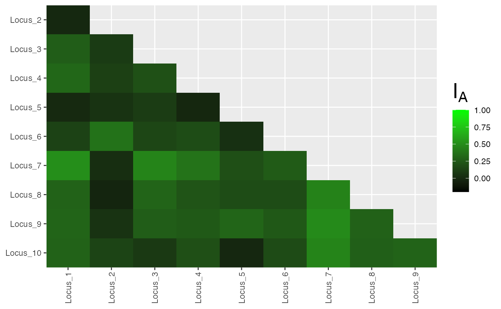
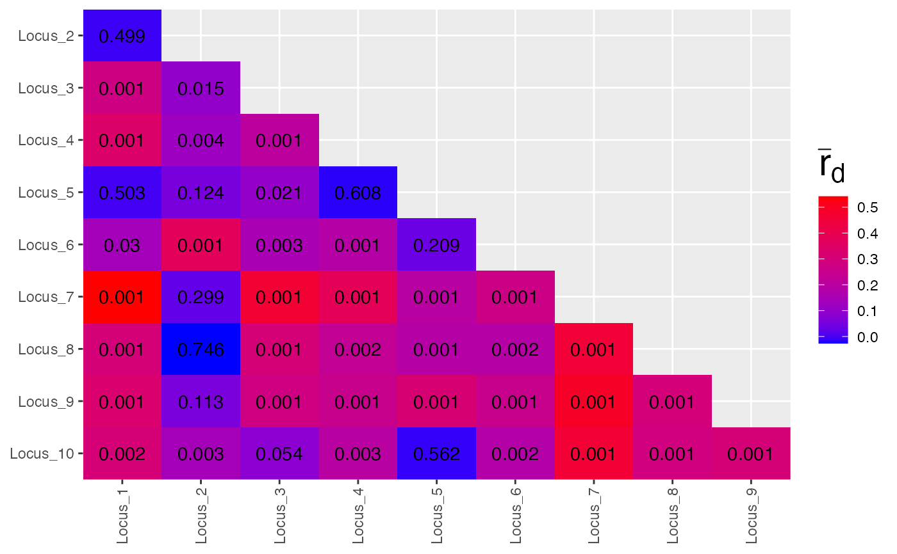
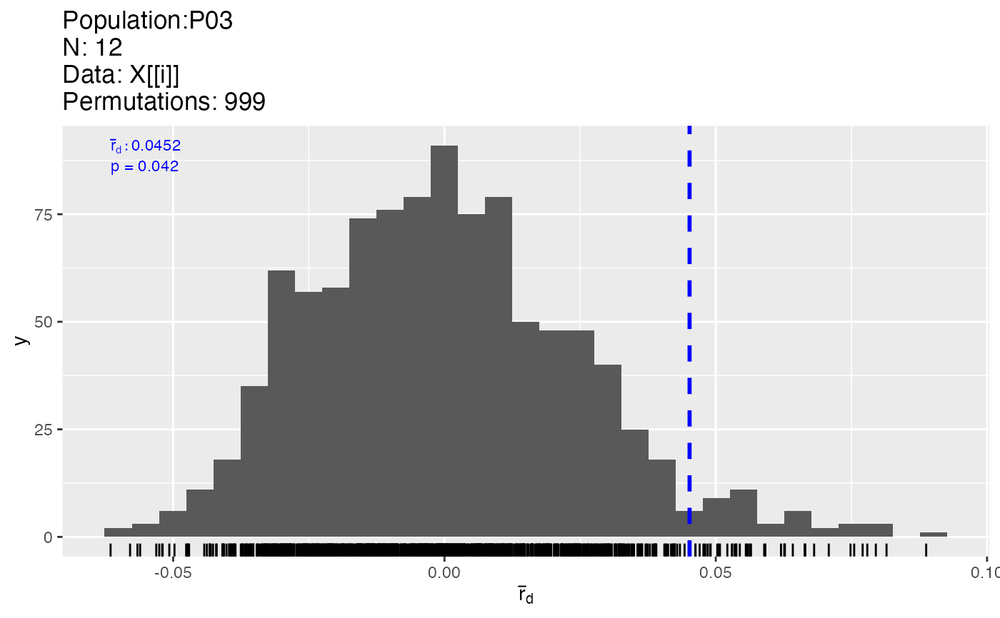
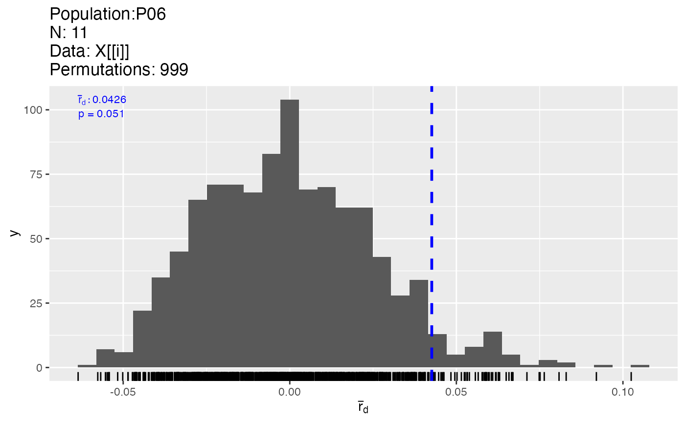
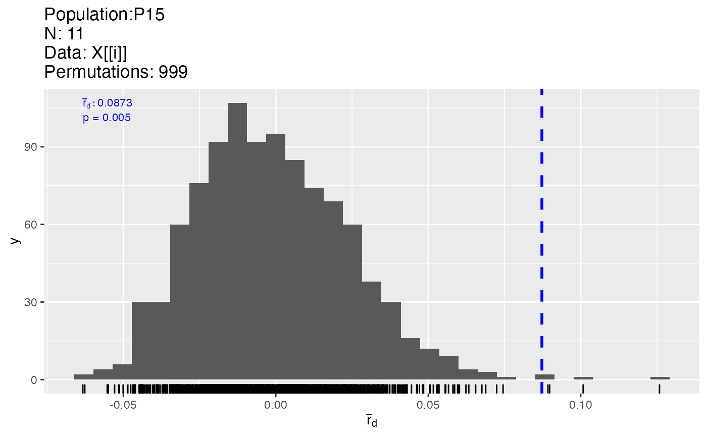
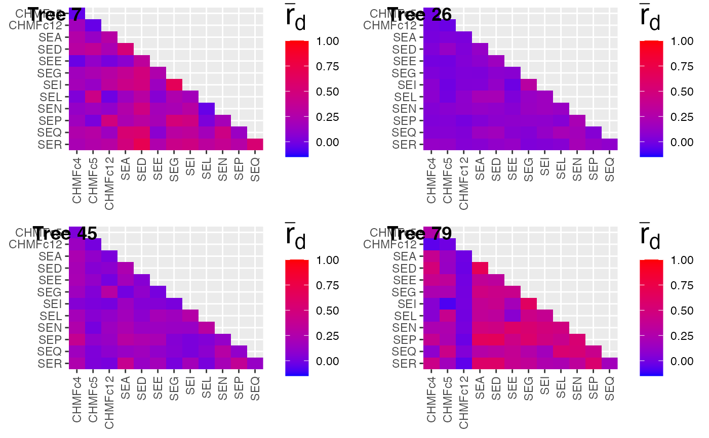

Calculate the Index of Association and Standardized Index of Association.
ia()calculates the index of association over all loci in the data set.pair.ia()calculates the index of association in a pairwise manner among all loci.resample.ia()calculates the index of association on a reduced data set multiple times to create a distribution, showing the variation of values observed at a given sample size (previouslyjack.ia).
ia( gid, sample = 0, method = 1, quiet = FALSE, missing = "ignore", plot = TRUE, hist = TRUE, index = "rbarD", valuereturn = FALSE ) pair.ia( gid, sample = 0L, quiet = FALSE, plot = TRUE, low = "blue", high = "red", limits = NULL, index = "rbarD", method = 1L ) resample.ia(gid, n = NULL, reps = 999, quiet = FALSE, use_psex = FALSE, ...) jack.ia(gid, n = NULL, reps = 999, quiet = FALSE)
Arguments
| gid | a |
|---|---|
| sample | an integer indicating the number of permutations desired (eg 999). |
| method | an integer from 1 to 4 indicating the sampling method desired.
see |
| quiet | Should the function print anything to the screen while it is performing calculations?
|
| missing | a character string. see |
| plot | When |
| hist |
|
| index |
|
| valuereturn |
|
| low | (for pair.ia) a color to use for low values when |
| high | (for pair.ia) a color to use for low values when |
| limits | (for pair.ia) the limits to be used for the color scale.
Defaults to |
| n | an integer specifying the number of samples to be drawn. Defaults to
|
| reps | an integer specifying the number of replicates to perform. Defaults to 999. |
| use_psex | a logical. If |
| ... | arguments passed on to |
Value
for pair.ia
A matrix with two columns and choose(nLoc(gid), 2) rows representing the values for Ia and rbarD per locus pair.
If no sampling has occurred:
A named number vector of length 2 giving the Index of Association, "Ia"; and the Standardized Index of Association, "rbarD"
If there is sampling:
A a named number vector of length 4 with the following values:
Ia - numeric. The index of association.
p.Ia - A number indicating the p-value resulting from a one-sided permutation test based on the number of samples indicated in the original call.
rbarD - numeric. The standardized index of association.
p.rD - A factor indicating the p-value resulting from a one-sided permutation test based on the number of samples indicated in the original call.
If there is sampling and valureturn = TRUE
A list with the following elements:
index The above vector
samples A data frame with s by 2 column data frame where s is the number of samples defined. The columns are for the values of Ia and rbarD, respectively.
resample.ia()
a data frame with the index of association and standardized index of association in columns. Number of rows represents the number of reps.
Details
The index of association was originally developed by A.H.D. Brown analyzing population structure of wild barley (Brown, 1980). It has been widely used as a tool to detect clonal reproduction within populations . Populations whose members are undergoing sexual reproduction, whether it be selfing or out-crossing, will produce gametes via meiosis, and thus have a chance to shuffle alleles in the next generation. Populations whose members are undergoing clonal reproduction, however, generally do so via mitosis. This means that the most likely mechanism for a change in genotype is via mutation. The rate of mutation varies from species to species, but it is rarely sufficiently high to approximate a random shuffling of alleles. The index of association is a calculation based on the ratio of the variance of the raw number of differences between individuals and the sum of those variances over each locus . You can also think of it as the observed variance over the expected variance. If they are the same, then the index is zero after subtracting one (from Maynard-Smith, 1993): $$I_A = \frac{V_O}{V_E}-1$$ Since the distance is more or less a binary distance, any sort of marker can be used for this analysis. In the calculation, phase is not considered, and any difference increases the distance between two individuals. Remember that each column represents a different allele and that each entry in the table represents the fraction of the genotype made up by that allele at that locus. Notice also that the sum of the rows all equal one. Poppr uses this to calculate distances by simply taking the sum of the absolute values of the differences between rows.
The calculation for the distance between two individuals at a single locus with a allelic states and a ploidy of k is as follows (except for Presence/Absence data): $$ d = \displaystyle \frac{k}{2}\sum_{i=1}^{a} \mid A_{i} - B_{i}\mid $$ To find the total number of differences between two individuals over all loci, you just take d over m loci, a value we'll call D:
$$D = \displaystyle \sum_{i=1}^{m} d_i $$
These values are calculated over all possible combinations of individuals in the data set, \({n \choose 2}\) after which you end up with \({n \choose 2}\cdot{}m\) values of d and \({n \choose 2}\) values of D. Calculating the observed variances is fairly straightforward (modified from Agapow and Burt, 2001):
$$ V_O = \frac{\displaystyle \sum_{i=1}^{n \choose 2} D_{i}^2 - \frac{(\displaystyle\sum_{i=1}^{n \choose 2} D_{i})^2}{{n \choose 2}}}{{n \choose 2}}$$
Calculating the expected variance is the sum of each of the variances of the individual loci. The calculation at a single locus, j is the same as the previous equation, substituting values of D for d:
$$ var_j = \frac{\displaystyle \sum_{i=1}^{n \choose 2} d_{i}^2 - \frac{(\displaystyle\sum_{i=1}^{n \choose 2} d_i)^2}{{n \choose 2}}}{{n \choose 2}} $$
The expected variance is then the sum of all the variances over all m loci:
$$ V_E = \displaystyle \sum_{j=1}^{m} var_j $$
Agapow and Burt showed that \(I_A\) increases steadily with the number of loci, so they came up with an approximation that is widely used, \(\bar r_d\). For the derivation, see the manual for multilocus.
$$ \bar r_d = \frac{V_O - V_E} {2\displaystyle \sum_{j=1}^{m}\displaystyle \sum_{k \neq j}^{m}\sqrt{var_j\cdot{}var_k}} $$
Note
jack.ia() is deprecated as the name was misleading. Please use
resample.ia()
References
Paul-Michael Agapow and Austin Burt. Indices of multilocus linkage disequilibrium. Molecular Ecology Notes, 1(1-2):101-102, 2001
A.H.D. Brown, M.W. Feldman, and E. Nevo. Multilocus structure of natural populations of Hordeum spontaneum. Genetics, 96(2):523-536, 1980.
J M Smith, N H Smith, M O'Rourke, and B G Spratt. How clonal are bacteria? Proceedings of the National Academy of Sciences, 90(10):4384-4388, 1993.
See also
poppr, missingno,
import2genind, read.genalex,
clonecorrect, win.ia, samp.ia
Author
Zhian N. Kamvar
Examples
#> Ia rbarD #> 0.17207262 0.02178965#> Ia rbarD #> 1 0.6501982 0.07093833 #> 2 0.8256286 0.09057133 #> 3 0.4231684 0.04623043 #> 4 0.6277631 0.06854268 #> 5 0.7032604 0.07697910 #> 6 0.6764791 0.07411652 #> 7 0.7627602 0.08376810 #> 8 0.6389609 0.06977151 #> 9 0.7841983 0.08570989 #> 10 0.6195379 0.06812260 #> 11 0.7605239 0.08751298 #> 12 0.7942110 0.08701043 #> 13 0.6059280 0.06675097 #> 14 0.6299434 0.06923696 #> 15 0.5638179 0.06169467 #> 16 0.6379127 0.07007583 #> 17 0.6960176 0.07630673 #> 18 0.7248024 0.07939282 #> 19 0.7008263 0.07667522 #> 20 0.4658464 0.05324204 #> 21 0.5385327 0.05893106 #> 22 0.5825171 0.06370222 #> 23 0.6904987 0.07549761 #> 24 0.6820235 0.07817614 #> 25 0.7170443 0.07867977 #> 26 0.7454600 0.08233780 #> 27 0.5887406 0.06441081 #> 28 0.6312326 0.06897246 #> 29 0.6593338 0.07259843 #> 30 0.5476437 0.05981975 #> 31 0.6912756 0.07928548 #> 32 0.7823573 0.08621459 #> 33 0.6800208 0.07426381 #> 34 0.7542653 0.08258429 #> 35 0.7014704 0.07703452 #> 36 0.6013052 0.06573002 #> 37 0.6833382 0.07467048 #> 38 0.5814739 0.06347431 #> 39 0.6779095 0.07404344 #> 40 0.7512745 0.08220176 #> 41 0.6809989 0.07811553 #> 42 0.6902944 0.07606066 #> 43 0.6111562 0.06714608 #> 44 0.7768184 0.08522498 #> 45 0.8038261 0.08789452 #> 46 0.6519288 0.07106003 #> 47 0.6015505 0.06595567 #> 48 0.7307723 0.08011669 #> 49 0.7786746 0.08914556 #> 50 0.6405280 0.07014232 #> 51 0.5461233 0.06019438 #> 52 0.7789662 0.08533309 #> 53 0.6231572 0.06804370 #> 54 0.6506544 0.07150263 #> 55 0.6572602 0.07574286 #> 56 0.6775073 0.07427077 #> 57 0.7315283 0.08022850 #> 58 0.6429697 0.07043269 #> 59 0.6858775 0.07858277 #> 60 0.7788526 0.08975278 #> 61 0.5810050 0.06378772 #> 62 0.7646678 0.08367388 #> 63 0.5923618 0.06438076 #> 64 0.6377337 0.06984813 #> 65 0.7351625 0.08469701 #> 66 0.6729850 0.07367359 #> 67 0.6730470 0.07376535 #> 68 0.6628730 0.07253585 #> 69 0.6429248 0.07001100 #> 70 0.6977442 0.07603908 #> 71 0.5948796 0.06497293 #> 72 0.6957663 0.07623048 #> 73 0.7108436 0.07780428 #> 74 0.6202232 0.06828203 #> 75 0.6192190 0.06760712 #> 76 0.5960247 0.06515301 #> 77 0.7035341 0.08045609 #> 78 0.7169920 0.07916178 #> 79 0.6357226 0.06987920 #> 80 0.8864959 0.10157407 #> 81 0.7207755 0.07877351 #> 82 0.6256714 0.06835729 #> 83 0.6528963 0.07503376 #> 84 0.5997759 0.06541564 #> 85 0.6834416 0.07857675 #> 86 0.6098177 0.07023320 #> 87 0.6764721 0.07385135 #> 88 0.6675123 0.07364553 #> 89 0.8096862 0.08858310 #> 90 0.5652613 0.06194018 #> 91 0.6005300 0.06599025 #> 92 0.5854640 0.06417910 #> 93 0.6862173 0.07531431 #> 94 0.7341306 0.08065948 #> 95 0.7370794 0.08091394 #> 96 0.6610314 0.07226520 #> 97 0.5200685 0.05694612 #> 98 0.6360764 0.07258663 #> 99 0.7294001 0.07977655# \dontrun{ # Pairwise IA with p-values (this will take about a minute) res <- pair.ia(partial_clone, sample = 999)#> Ia p.Ia rbarD p.rD #> Locus_1:Locus_2 -0.007935313 0.498 -0.00827841 0.499 #> Locus_1:Locus_3 0.269326856 0.001 0.27484539 0.001 #> Locus_1:Locus_4 0.320892032 0.001 0.33749005 0.001 #> Locus_1:Locus_5 -0.003553671 0.503 -0.00375937 0.503 #> Locus_1:Locus_6 0.133939476 0.032 0.13782217 0.030 #> Locus_1:Locus_7 0.504438856 0.001 0.54150373 0.001# Plot the results of resampling rbarD. library("ggplot2") Pinf.resamp <- resample.ia(Pinf, reps = 999) ggplot(Pinf.resamp[2], aes(x = rbarD)) + geom_histogram() + geom_vline(xintercept = ia(Pinf)[2]) + geom_vline(xintercept = ia(clonecorrect(Pinf))[2], linetype = 2) + xlab(expression(bar(r)[d]))#># Get the indices back and plot the distributions. nansamp <- ia(nancycats, sample = 999, valuereturn = TRUE)# You can also adjust the parameters for how large to display the text # so that it's easier to export it for publication/presentations. library("ggplot2") plot(nansamp, labsize = 5, linesize = 2) + theme_bw() + # adding a theme theme(text = element_text(size = rel(5))) + # changing text size theme(plot.title = element_text(size = rel(4))) + # changing title size ggtitle("Index of Association of nancycats") # adding a new title#> $P01 #> Ia rbarD #> 0.16564272 0.02105965 #> #> $P02 #> Ia rbarD #> 0.18176676 0.02301615 #> #> $P03 #> Ia rbarD #> 0.35461940 0.04517282 #> #> $P04 #> Ia rbarD #> 0.44944509 0.05634184 #> #> $P05 #> Ia rbarD #> -0.047539953 -0.006004254 #> #> $P06 #> Ia rbarD #> 0.33370148 0.04261598 #> #> $P07 #> Ia rbarD #> 0.25691744 0.03259883 #> #> $P08 #> Ia rbarD #> 0.23877871 0.03012163 #> #> $P09 #> Ia rbarD #> 2.0845196 0.2636454 #> #> $P10 #> Ia rbarD #> 0.59550982 0.07627372 #> #> $P11 #> Ia rbarD #> 0.2846571 0.0362703 #> #> $P12 #> Ia rbarD #> 0.48988697 0.06428403 #> #> $P13 #> Ia rbarD #> 0.1855035 0.0236618 #> #> $P14 #> Ia rbarD #> 0.2210061 0.0282276 #> #> $P15 #> Ia rbarD #> 0.69325774 0.08726678 #> #> $P16 #> Ia rbarD #> 0.23450449 0.02950446 #> #> $P17 #> Ia rbarD #> -0.09055833 -0.01378538 #>#> $P01 #> Ia p.Ia rbarD p.rD #> 0.16564272 0.24100000 0.02105965 0.24100000 #> #> $P02 #> Ia p.Ia rbarD p.rD #> 0.18176676 0.06900000 0.02301615 0.06400000 #> #> $P03 #> Ia p.Ia rbarD p.rD #> 0.35461940 0.04200000 0.04517282 0.04200000 #> #> $P04 #> Ia p.Ia rbarD p.rD #> 0.44944509 0.00100000 0.05634184 0.00100000 #> #> $P05 #> Ia p.Ia rbarD p.rD #> -0.047539953 0.567000000 -0.006004254 0.566000000 #> #> $P06 #> Ia p.Ia rbarD p.rD #> 0.33370148 0.05100000 0.04261598 0.05100000 #> #> $P07 #> Ia p.Ia rbarD p.rD #> 0.25691744 0.10100000 0.03259883 0.10100000 #> #> $P08 #> Ia p.Ia rbarD p.rD #> 0.23877871 0.14700000 0.03012163 0.14700000 #> #> $P09 #> Ia p.Ia rbarD p.rD #> 2.0845196 0.0010000 0.2636454 0.0010000 #> #> $P10 #> Ia p.Ia rbarD p.rD #> 0.59550982 0.00400000 0.07627372 0.00300000 #> #> $P11 #> Ia p.Ia rbarD p.rD #> 0.2846571 0.3230000 0.0362703 0.3250000 #> #> $P12 #> Ia p.Ia rbarD p.rD #> 0.48988697 0.01200000 0.06428403 0.01200000 #> #> $P13 #> Ia p.Ia rbarD p.rD #> 0.1855035 0.1660000 0.0236618 0.1640000 #> #> $P14 #> Ia p.Ia rbarD p.rD #> 0.2210061 0.0700000 0.0282276 0.0700000 #> #> $P15 #> Ia p.Ia rbarD p.rD #> 0.69325774 0.00500000 0.08726678 0.00500000 #> #> $P16 #> Ia p.Ia rbarD p.rD #> 0.23450449 0.11800000 0.02950446 0.11800000 #> #> $P17 #> Ia p.Ia rbarD p.rD #> -0.09055833 0.66300000 -0.01378538 0.66500000 #># Plot pairwise ia for all populations in a grid with cowplot # Set up the library and data library("cowplot") data(monpop) splitStrata(monpop) <- ~Tree/Year/Symptom setPop(monpop) <- ~Tree # Need to set up a list in which to store the plots. plotlist <- vector(mode = "list", length = nPop(monpop)) names(plotlist) <- popNames(monpop) # Loop throgh the populations, calculate pairwise ia, plot, and then # capture the plot in the list for (i in popNames(monpop)){ x <- pair.ia(monpop[pop = i], limits = c(-0.15, 1)) # subset, calculate, and plot plotlist[[i]] <- ggplot2::last_plot() # save the last plot }# Use the plot_grid function to plot. plot_grid(plotlist = plotlist, labels = paste("Tree", popNames(monpop)))# }